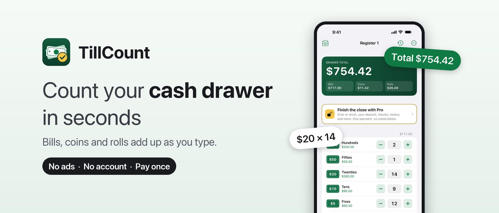

Alday Inc / Games & apps / TillCount
Cash drawer counter
Cash Counter - TillCount
TillCount
Count your cash drawer in under a minute.
A cash drawer counter for cashiers, shift leads, managers, bartenders and market vendors. Type how many of each bill, coin and roll you have; with Pro, see if you are over or short and exactly what goes to the bank.

PriceFree, with an optional one-time Pro purchase
DevicesiPhone · iPad · iPhone Duo
Languages10, incl. English & Bahasa Indonesia
OfflineYes
Made byAlday Inc